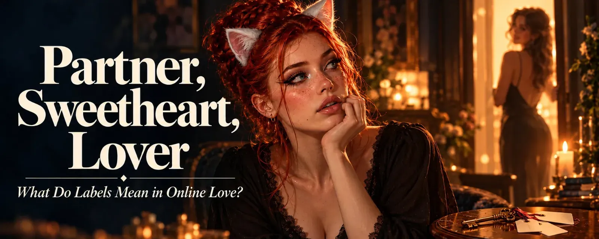
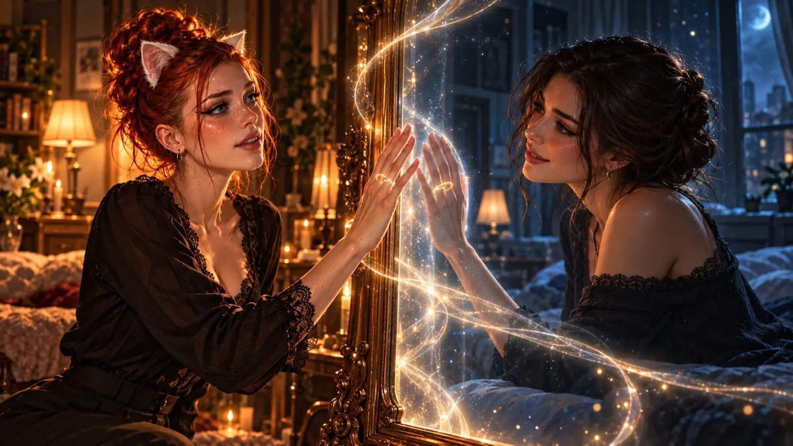
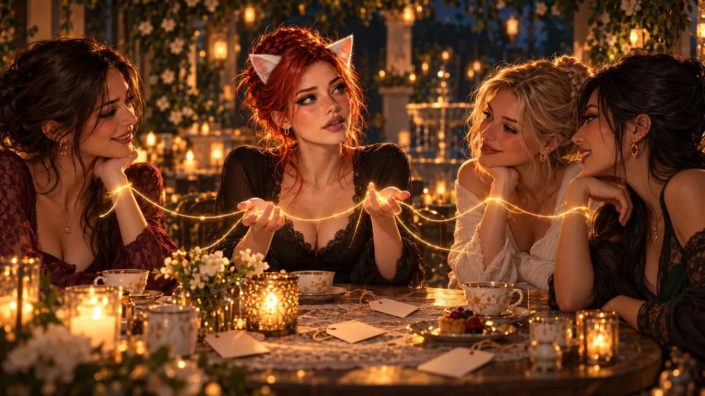
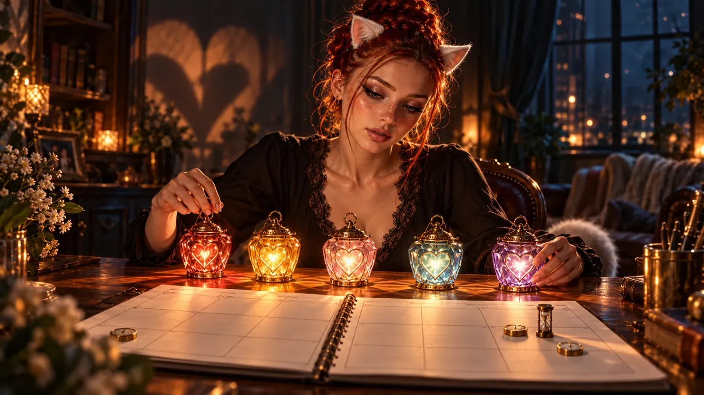
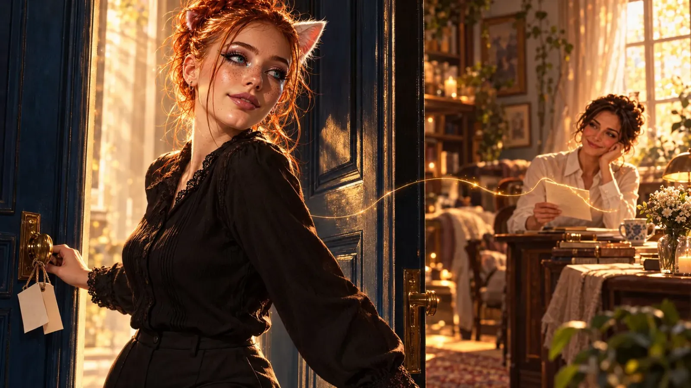

Partner, Sweetheart, Lover: What Do Labels Mean in Online Love?
I was married once. Online. There was a proposal, a yes, a little bit of a racing heart. Fine, not a little bit. A lot. And afterwards, exactly zero consequences. No registry office, no shared flat, no name on the doorbell. Not even a coffee machine to fight over. And still I felt it, that "This is my wife". It was lovely to say it out loud. I just wonder now: what did that word actually mean?

Monogamy is simple. Poly isn't.
In a monogamous relationship, things are clear. Your partner is your partner - woman, man or anything in between. There are friends you talk to, laugh with, go through thick and thin with - but you don't get intimate with them. That's the deal, and everyone knows it. Even your mother-in-law.
Polyamory works differently. There can be someone else alongside, someone you get intimate with. And online, something else comes into play: everything you do with your partner, you can do just the same with everyone else. With one I talk about quantum mechanics, with the next about the new GTA, with the third about recipes, and at some point the fourth writes "Let's play" - and then two people type things, and neither knows whether the other has a hand under the blanket or just a cup of tea. We call that sex. Friends can do it. Spouses can do it. Married people can do it with their friends. The keyboard couldn't care less which relationship status is typing on it.
At some point I had a wife and several "Heartwifes" - because "girlfriend" just sounded too harmless, and for me there could only be one "wife". A lovely word, honestly. But it didn't classify anything. There was nothing I could do with my wife that I couldn't do with the others. Same status, different word.
Offline, by the way, poly isn't nearly as exotic as it sounds. In large surveys in the US, roughly one in five singles has been in a consensually non-monogamous relationship at some point - about as many people as own a cat there. Online it feels more like four in five. And if almost everyone says they're poly - where exactly is "the one"?

We don't love more. We love differently.
Many people know this line: "I really like you, but I actually love my partner." Or the little escape staircase: "I like you." Then: "I like you a lot." Then: "I like you a lot, a lot." At some point I wonder where the difference is supposed to be, apart from the number of "a lot"s.
For me it's like this: love is love. There's no "I love you ten percent". The hormones rushing through my body don't do the maths on who gets five and who gets ninety percent. They don't own a calculator, and if they did, they'd misplace it. But I love every person differently - my brother differently from my sister, my best friend differently from my partner. Every love has its own note, like a perfume that smells a little different on every skin. So "I love you differently" doesn't mean "I love you less".
And that's not just romance, you can see it in the brain. Whether people think of their partner or their child - in both cases the same reward system lights up, right where the bonding hormones oxytocin and vasopressin do their work. On top of that come areas that are active only for one kind of love or the other. Newer scans show the same picture for friends: a shared core, and around it a pattern of its own for every love. Same love, different note. So the brain knew before I wrote it down.
What changes isn't the love, it's the attention. You know this one? You're thinking about buying a particular car, let's say a little red Fiat - and suddenly there's one on every corner. The red Fiats haven't secretly multiplied. You just see them. There's even a technical term for it: the frequency illusion. The brain filters for what matters right now and treats every hit as proof. Love works the same way. The person I'm looking at right now is everywhere - in my thoughts, in my messages, in every song that happens to play. I don't love them more than the others because of it. I'm just paying more attention right now.
And attention is limited, because our time is finite. That's measurable too: it takes around 50 hours together to turn a passing acquaintance into a casual friend, and more than 200 for a close friendship. And around 40 percent of the time we spend on other people goes to only about five people closest to us. The inner circle has surprisingly few chairs. The heart is roomy. The calendar isn't.
What we often confuse is love with time. And then we talk ourselves into loving someone less, because there's already someone we're "supposed" to love more. When really, the only thing that differs is how much time and attention we can give someone.

What a label like marriage really means
If a label doesn't measure how much we love - what is it good for? I think that especially in a polyamorous online world, labels are mostly reminders. Little notes we stick to the mirror so we remember in the morning how important we can let a person be. It's less about what is than about what could be: about potential, about a space two people can use together if they want to. A label isn't a room. It's a key. You still have to live there yourself.
And really, every one of these words is a contract. A verbal one, a handshake, with no small print - and usually no large print either. We say "You're my lover" and both sign without either of us knowing what's in it. What makes a lover a lover? What makes a girlfriend a girlfriend? Is she allowed to be jealous? Does she get the evening when she's having a bad day? Everyone reads the contract with their own clauses. The working world even has a term for this: the psychological contract. Expectations that were never spoken and still count. When someone breaks one of those clauses, it feels like betrayal, even though the other person never knew it existed. The only thing that helps is the least romantic thing in the world: talking about it. People who talk openly about their relationship demonstrably know better where they stand.
My small print for "my wife" reads like this: she is the most important person. The person I ask first when it's about our relationship. The person I include in my decisions. The one I carry out of the burning house first. I'll carry the others out afterwards too, don't worry - I'll just have to run more often. That doesn't make anyone less important. It just shows where my responsibility lies first.
Imagine you're married, and a good friend of yours is seriously ill. So ill that the hospice isn't far off anymore. Suddenly you spend a lot of time with her. Do you love her more than your partner because of it? No. You may love her just as strongly - you'll cry bitterly when she goes. But her time is more limited, so right now she gets more of yours. Afterwards you look after your partner more again.
So one important clause in this contract governs who gets time and attention - when they need it. Not always, not automatically. Anyone who says "You belong to me, so ninety percent of my time belongs to you" is clinging. And at some point the other person will probably say: "Go away." Honestly, I'd say it too.
And the label brings something else along: responsibility. If I have a committed partner and meet someone new, my first stop is my partner. "Hey, I've met someone. Before I bring this person into our lives, I want to talk to you. Get to know each other, and then tell me whether it works for us." Because every person who joins can change the whole dynamic. If everyone is simply my sweetheart, I carry the same responsibility for all of them - and nobody has to fear for a place that doesn't exist. But whoever is engaged or married to me has a right to be asked.
That this isn't just my gut feeling is shown by a large survey of more than 1,300 polyamorous people. With their primary partner they reported more commitment, more shared investment and more conversations about the relationship than with other partners. And here's the lovely part: those who were happy in a second relationship didn't feel less connected to their primary partner, but rather more. Love isn't a cake where every new slice makes the old one smaller. More like sourdough. The more you give away, the more grows back.
Without a label, by the way, a ranking still happens. Only it's not the agreement that decides, but the excitement. The new person is more thrilling, so they get more time. And we don't even decide that consciously - it just happens, all on its own. Like the little red Fiat that's suddenly on every corner.
The poly scene even has its own name for this feeling, and it sounds like an energy drink: New Relationship Energy. That tingle at the start, when someone is new and everything about them glows. It's wonderful, and it fades. Offline, people reckon with months, sometimes up to a year and a half. Online everything moves faster: in chat, closeness builds faster and more intensely than in real life, because we fill the gaps in our picture of the other person with our loveliest wishes. And it can be over just as fast - experts call it, quite drily, "boom and bust", as if we were talking about share prices. I've seen the rush fade online within a few days. The annoying part is: by then, the person who's been there longer has long since been sent to the back of the queue. And at some point it blows up.
Online, only the will holds
It used to be: permanent employment contract, you're safe. Until the redundancy notice came. Online love is just the same. We tell each other "You're the love of my life", "We're soulmates", "I only want you". We get engaged. We get married. And then, from one hour to the next, a message: "We have to break up."
Huh? What?
That's online love.
In a real marriage there'd be conversations first, maybe couples counselling, the question of what's actually wrong. Online there's the block button. A new account. A "We're done", finished. I had even explicitly agreed that we would always talk about everything before problems got too big. It didn't help.
Relationship research explains why, quite soberly. Whether someone stays depends not only on how happy they are, but also on what they've already invested and how good the alternatives look. Offline, a relationship is therefore also held together by things that have little to do with love: the shared flat, the shared friends, the sofa nobody wants to carry down the stairs alone. Online there's no sofa. The investment is words and time, and the next alternative is exactly one click away. And the investment is rarely shared equally. Whoever writes texts, generates images and gives up nights has more to lose than someone who just reads along. No wonder about one in four people in surveys say they've been "ghosted" by a partner at some point. Without a shared circle of friends, it's simply easier to vanish.
And yet every relationship is a declaration of will by two people - offline just as much as online. The difference lies in what happens when things get hard. Offline, I can't click a person out of my life. They're at the breakfast table, they're in the hallway, they still have my favourite jumper. I have to deal with them whether I want to or not. And sometimes exactly that reminds me that I once promised something. Maybe I should work on it instead of avoiding the problem.
Online, on the other hand, fading people out is the most comfortable option. If someone gets too much for me, I say "We're done". If they get on my nerves, I block them. A few tears, a few days, ticked off. We humans like to push unpleasant things away when we get the chance - and online we always have the chance, right next to the heart button.
Because an online relationship has no consequences, it also has nothing to hold on to. The only hold is the will of two people. Of both of them. If one still wants it and the other has long let go, that's it. It's like a house of cards: beautiful, surprisingly stable even, as long as nobody sneezes. And that goes for every label - marriage, engagement, soulmates. Maybe soulmates really exist, as a feeling, as a moment. But no feeling is a promise.
And yet you hear it a lot: "In that moment, I really felt it." Or: "In that moment, you were my soulmate." That may even be true. But what does it say about me if my big words only hold for as long as the moment I say them in? Imagine I worked like that: "I know I promised to finish it yesterday. But afterwards I realised it only counted for the moment. Later I just didn't feel like it anymore." My boss would probably not be touched. She'd be my ex-boss. Trust, research shows, grows first out of predictability: out of the experience that someone still means today what they said yesterday. A feeling is allowed to change. A promise should at least survive the sunrise.
Psychology likes to split love into three parts: intimacy, passion and commitment. Passion blazes high at the start and then calms down, that's perfectly normal. Commitment, on the other hand, is the part we control most ourselves - the decision that we love someone, and the resolve to keep that love. Experts call it the "cold" part of love, which sounds about as romantic as a fridge. But fridges keep things fresh. Online, this cold part is all we have: will, a bit of discipline, and the question of how much meaning we give our own words. Because big words come surprisingly easily online. We say "marriage" and "my wife", and it feels good. But a word like that weighs exactly as much as we let it.
Offline, by the way, people aren't automatically more faithful or wiser. Often it's simply the flat, the money and the shared friends holding them together, sometimes for longer than is good. Online, those hurdles are missing. But that also means: if we stay and work on something, it's not because we have to, but because we want to. And that's exactly where the invitation lies.
In the end, everyone wants to be happy. But is it worth jumping to the next person at every problem and hoping it'll be better there? Or do we start giving our words weight, feeling them and living them - and working our way through the first problem together, instead of writing "Sorry, we're done" or hitting the block button straight away? That doesn't only go for marriage. It goes for every relationship we cut off just because it's getting a bit much right now.
You often hear the lovely line that you should choose each other anew every morning. To me it always sounded a little as if you had to talk yourself into love. I see it differently: "I don't choose you. I feel that I'm going to have another beautiful day with you." The feeling comes on its own, I don't decide that. My will is only there to open the door for it every day.
Why we do it anyway
I don't want to badmouth online love. It's fragile, yes. You always live a little with the knowledge that you could lose someone overnight. And still I keep falling in love. I'm like a cat at a closed door - I know it can close again, and I still want through.
Because it simply feels good. There's nobody in front of me holding out a hand, kissing me, holding me. It's all just text. But somewhere on this planet sits a person who's thinking of me right now. Who maybe feels the same as I do. Knowing that creates a connection that feels like belonging.
And for some of us it's more than an alternative. As a trans girl, the internet is almost the only place where I really get love. Offline I get sex if I want it. But a relationship? That gets very, very difficult. Sadly that's not just a feeling, it's a number: in a survey of nearly a thousand people, 87.5 percent ruled out trans people as potential partners from the start. Trans women were the least likely to be considered. Online you get to know a person first and only then their story. Sometimes that's the only order that works.
So: wife, husband, partner, sweetheart, lover, Heartwife - in the end they're words. Beautiful words, sometimes. They don't say how much we love, only who we promise our time to and who we ask before we open our hearts a little further. Little notes on the mirror. And they hold exactly as long as two people want to hold them. ❤️

First published on X. Replies and conversation live there.